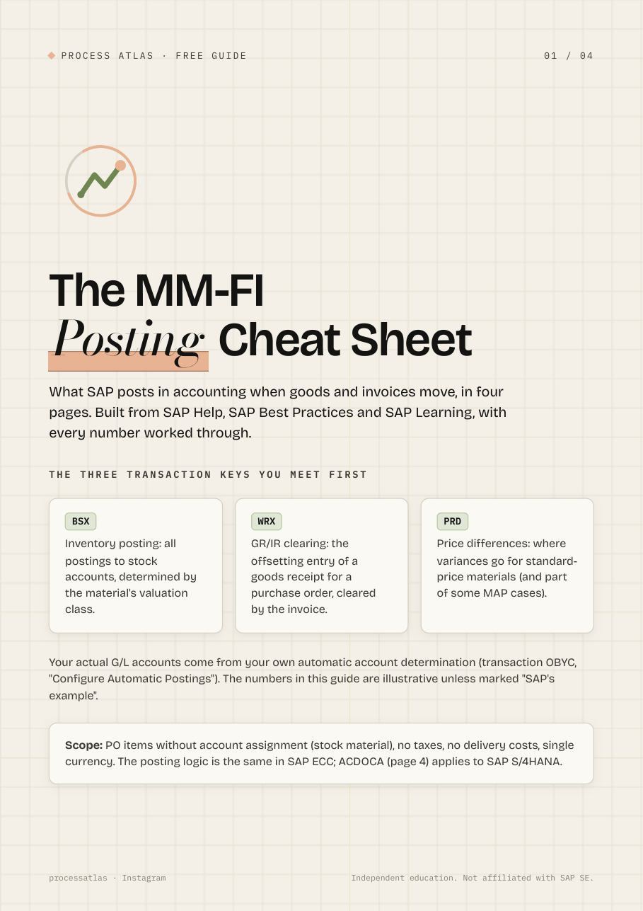

Process Atlas
SAP explained visually
The MM-FI Posting Cheat Sheet
What SAP posts in accounting when goods and invoices move, in four pages. Free, no sign-up.

- The transaction keys BSX, WRX and PRD
- Goods receipt postings: moving average vs standard price
- Invoice price differences and what a GR/IR balance means
- SAP's invoice-before-goods-receipt example, worked through
- GR/IR clean-up and where it all lands in ACDOCA
Every claim is checked against SAP Help, SAP Best Practices or SAP Learning, with sources on each page. Numbers are illustrative unless marked as SAP's example.